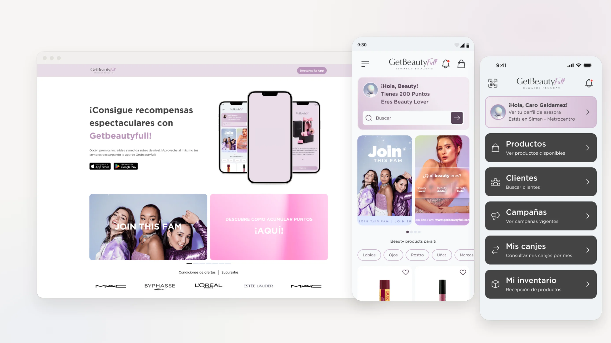
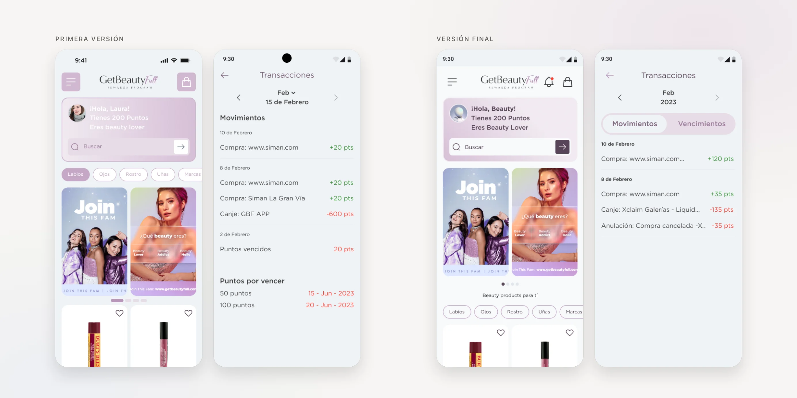
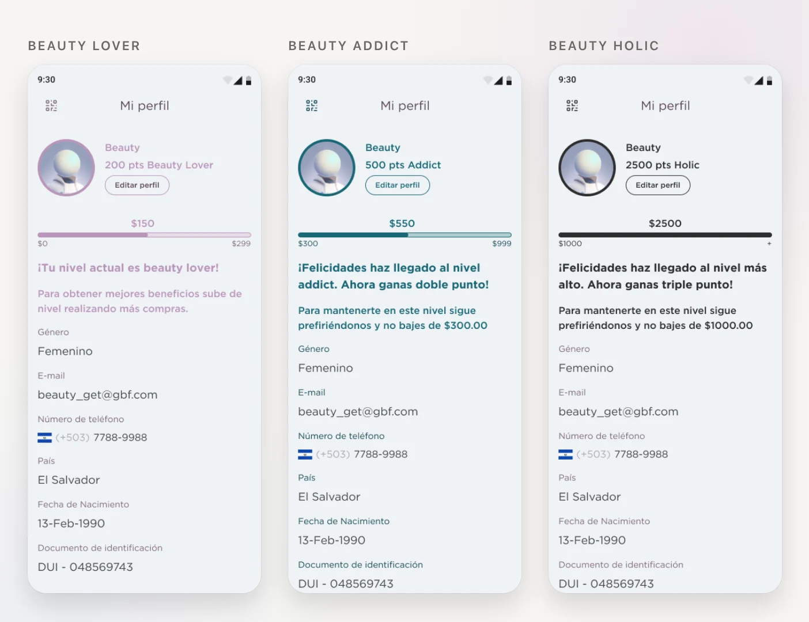
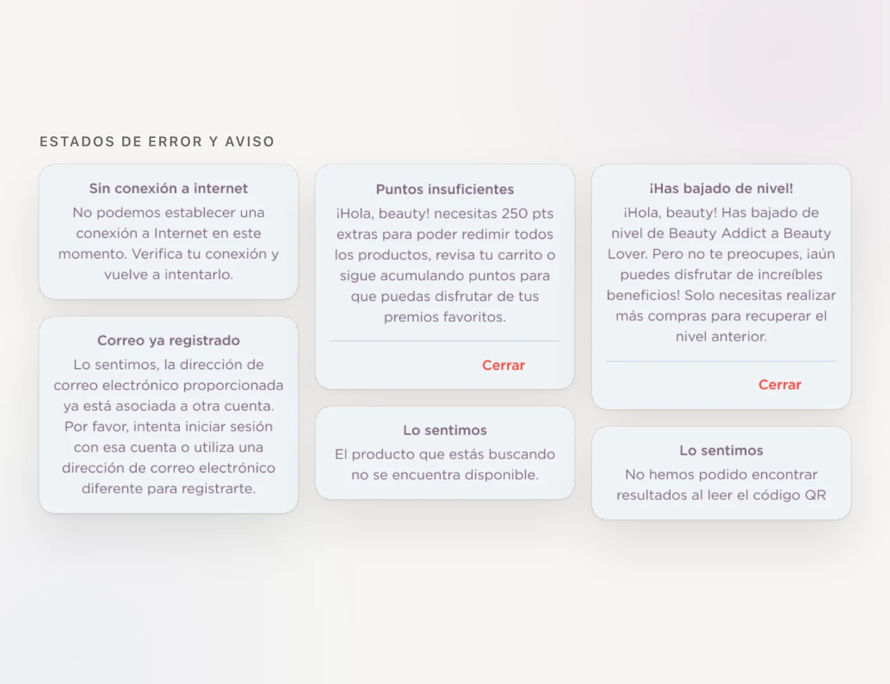
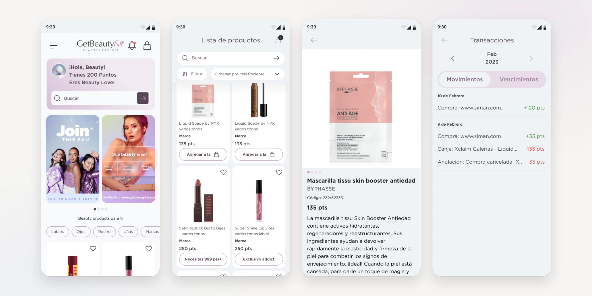
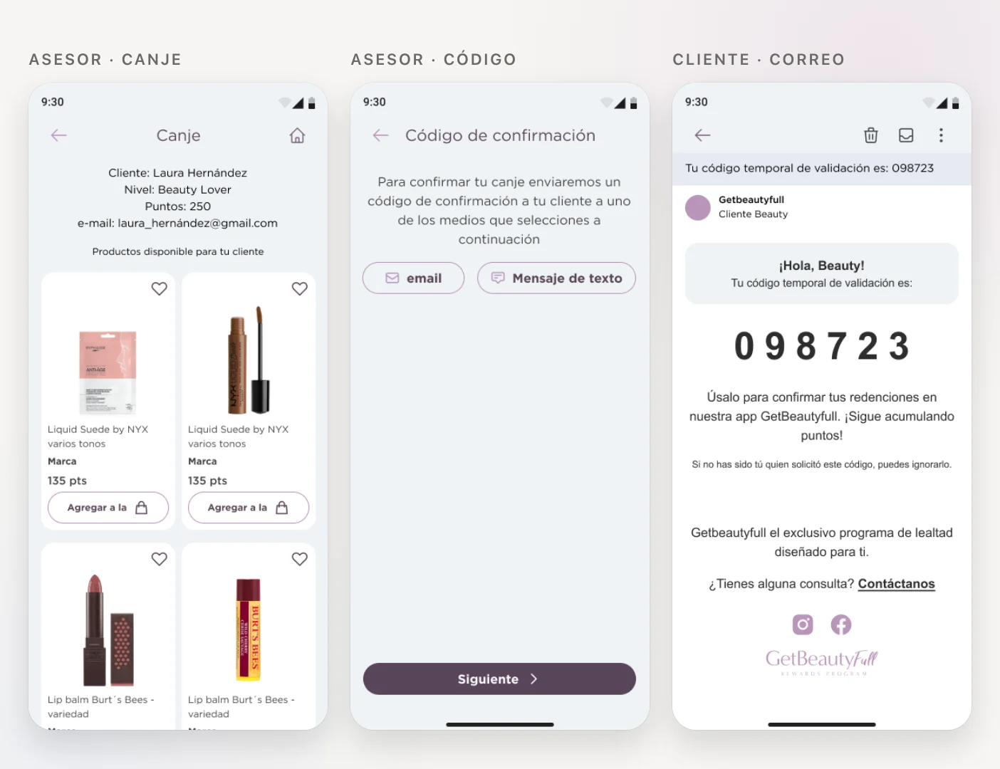
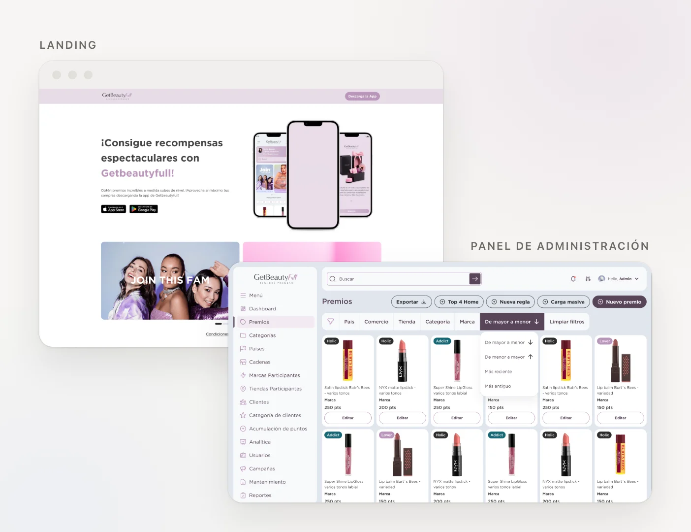

Retail · Programa de lealtad · App, web y backoffice · 2023
Getbeautyfull: un programa de lealtad de belleza, diseñado de principio a fin.
El área de cosméticos de Siman quería premiar a quienes compran productos de belleza en Siman, Xclaim y MAC Cosmetics. Diseñé todo el ecosistema del programa: la app para clientes, la app para asesores en tienda, el panel de administración, la landing y los correos, con un sistema visual que cambia según el nivel de cada persona. La app se lanzó en 2023.
- Rol
- Product Designer, único diseñador del proyecto
- Equipo
- Área de cosméticos de Siman y Digital Factory by Livin (proveedor externo)
- Duración
- Del primer mockup al lanzamiento en 2023
- Alcance
- App de clientes y de asesores, panel de administración, landing, correos y design system
- Herramientas
- Figma, Jira

01. Contexto
Getbeautyfull es el programa de lealtad del área de cosméticos de Siman. Funciona en tres cadenas (Siman, Xclaim y MAC Cosmetics) y está pensado para cuatro países: El Salvador, Guatemala, Costa Rica y Nicaragua. Cada compra suma puntos, los puntos se canjean por productos y, según cuánto compra, cada persona sube de nivel: Beauty Lover, Beauty Addict o Beauty Holic. Cada nivel da más puntos por compra y acceso a premios exclusivos.
El reto
Un programa de lealtad tiene dos lados que dependen uno del otro. Del lado del cliente, tiene que quedar claro cuántos puntos tiene, qué puede canjear y cómo sube de nivel. Del lado de la tienda, el canje ocurre en persona y tiene que ser rápido y seguro. Y todo tenía que sentirse parte de Siman.
- Explicar puntos, niveles y premios exclusivos sin que el programa se sienta complicado.
- Canjear en tienda en pocos pasos, con la confirmación de quien es dueño de los puntos.
- Un mismo sistema para tres cadenas, cuatro países y los equipos que administran el programa.
02. Proceso
Diseñé el proyecto completo, desde los primeros mockups hasta el lanzamiento, trabajando con el equipo de cosméticos de Siman y con Digital Factory by Livin como proveedor externo.
Investigación y definición
Empecé con un benchmark de programas de lealtad y lo crucé con el estilo del ecommerce de Siman: el programa necesitaba personalidad propia, pero sin dejar de sentirse parte de la marca. De ahí salieron los patrones base (tarjeta de producto, buscador, filtros y navegación inferior) y una paleta que cambia por nivel: lila para Beauty Lover, verde azulado para Beauty Addict y gris oscuro para Beauty Holic.
Diseño
Organicé el trabajo por épicas e historias de usuario. Cada pantalla en Figma lleva el número de su historia en Jira, para que diseño y desarrollo hablaran siempre del mismo alcance. Las primeras versiones se fueron simplificando. En la home, los filtros por categoría bajaron debajo de los banners para dejar arriba el saludo y los puntos, y se agregó el centro de notificaciones. En transacciones, una sola lista que mezclaba movimientos y puntos por vencer se separó en dos pestañas. Además, cada flujo tiene sus estados de error y aviso (sin conexión, puntos insuficientes, producto no disponible o bajar de nivel), para que ningún caso quedara sin diseñar.



03. Solución
En la app de clientes, la home saluda con los puntos y el nivel. El catálogo muestra en cada tarjeta si el producto se puede canjear: cuántos puntos cuesta, si faltan puntos o si es exclusivo de un nivel. La ficha del producto indica en qué tiendas está disponible, el perfil muestra cuánto falta para el siguiente nivel y las transacciones separan los movimientos de los puntos por vencer.
Canje en tienda, confirmado por el cliente
En la app de asesores, el canje empieza en tienda: el asesor busca al cliente por su número de documento, ve su nivel, sus puntos y los productos que puede canjear, y antes de confirmar le envía un código por correo o por mensaje de texto. Así, cada canje lo autoriza quien es dueño de los puntos.
Alrededor de las dos apps diseñé el resto del ecosistema: una landing con sucursales y términos por país, los correos con los códigos de verificación y un panel de administración para gestionar premios, tiendas, marcas, campañas y reglas de acumulación de puntos.



04. Impacto
La app se lanzó en 2023 y hoy tiene una base amplia de personas afiliadas. Las cifras pertenecen al área de cosméticos de Siman y no las comparto; lo que sí puedo mostrar es el alcance del diseño y el criterio detrás de cada decisión.
Qué aprendimos
Diseñar un programa de lealtad es diseñar dos experiencias que dependen una de la otra: si el canje en tienda falla, la promesa de la app se cae. Trabajar con un proveedor externo me confirmó que la trazabilidad importa tanto como la pantalla: nombrar cada diseño con su historia de usuario hace que diseño y desarrollo hablen del mismo alcance. Y diseñar los estados de error desde el principio, en lugar de dejarlos para el final, es lo que hace que un producto se sienta terminado.